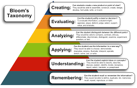

BLOOM'S TAXONOMY
OVERVIEW:
Bloom's Taxonomy is a framework for categorizing educational goals and objectives. Developed by Benjamin Bloom and his colleagues in 1956, it is used to guide the development of curriculum and assessments. The taxonomy is often depicted as a pyramid with six levels, each representing a different type of cognitive skill.
- Remembering: Recalling facts and basic concepts.This is the foundational level, involving the retrieval of information from memory.
- Examples: Memorizing a list of historical dates, recalling a formula in math.
- Understanding: Comprehending the meaning of information. This involves interpreting, summarizing, and explaining concepts.
- Examples: Explaining a concept in your own words, summarizing a passage of text.
- Applying: Using information in new situations.This involves implementing knowledge in practical or theoretical situations.
- Examples: Using a formula to solve a math problem, applying a theory to a real-world scenario.
- Analyzing: Breaking down information into components. This involves understanding the structure of information and how parts relate to the whole.
- Examples: Analyzing the arguments in an essay, examining the plot structure of a novel.
- Evaluating: Making judgments based on criteria and standards. This involves assessing the value or quality of information and arguments.
- Examples: Critiquing a research study, evaluating the effectiveness of a solution to a problem.
- Creating: Generating new ideas or products. This is the highest level, involving the synthesis of information to produce original work.
- Examples: Designing a new experiment, writing a novel, creating a business plan.